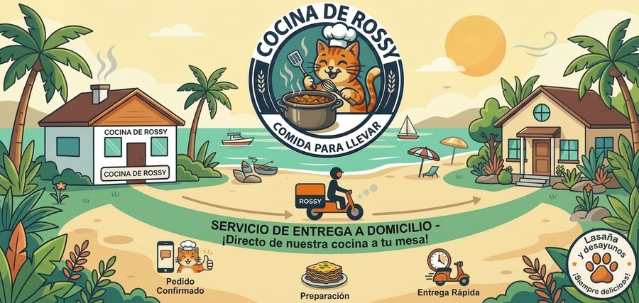

Perfil del negocio
Quiénes somos, qué hacemos y a quién le vendemos
Cocina de Rossy
Quiénes somos, qué hacemos y a quién le vendemos
Cocina de Rossy
Esta es la «cédula» del negocio: lo que se responde cuando alguien pregunta «¿y qué es Cocina de Rossy?». Sirve para la familia, para un cliente, para una feria o para una publicación. Está escrita en palabras simples a propósito: si hay que explicarlo complicado, es que todavía no está bien entendido.

La mascota es una gatita anaranjada con gorro de cocinera que come lasaña con tenedor y cuchillo, muy contenta. Es la cara del negocio.
Se eligió un gato porque todo el mundo relaciona a los gatos con la lasaña, y porque a Rossy le gustan los gatos. Es un guiño amable, no una copia de ningún personaje conocido: es una gatita propia, con su propio nombre y su propia historia.
La mascota sirve para saludar a los clientes, para los stickers de WhatsApp y para las publicaciones. Cuando alguien vea la gatita, debe pensar en la cocina de Rossy.
En la provincia hay restaurantes italianos caros (de 20 a 25 dólares por persona) y pizzerías baratas. En el medio no hay nada para una familia: comida italiana rica, para llevar, en porción grande y a precio normal. Ese es el espacio de Rossy.
| Lo que hay hoy | Lo que falta | Lo que ofrece Rossy |
|---|---|---|
| Restaurantes italianos de USD 20 a 25 por persona, con mesas, en Salinas. | Opciones para comer en casa sin gastar como en restaurante. | Lasaña por encargo, entregada en la casa. |
| Pizzerías que venden la porción desde USD 2. | Comida que llene de verdad y se pueda compartir en familia. | Bandeja de 6 porciones a USD 19,00. |
| Un solo local vende lasaña, y es parte de un menú amplio. | Una marca que sea especialista en lasaña. | Una sola cosa hecha bien, con nombre propio. |
| Casi nadie tiene opción vegetariana. | Alternativa para quien no come carne. | Lasaña vegetariana siempre disponible. |
Dar a las familias de La Libertad comida casera, abundante y rica todos los días, hecha con ingredientes de verdad y al precio de una comida normal: el desayuno por la mañana y la lasaña para compartir en casa.
Ser la cocina de referencia de la península de Santa Elena en desayunos y lasaña y, en cuatro o cinco años, un negocio que camine solo: con un equipo que cocine, un administrador que organice y Rossy dedicada a la marca, la calidad y las decisiones importantes.
Nada que no le daríamos a nuestros hijos.
Si se dice que llega a las 6, llega a las 6.
El cliente tiene que quedar satisfecho, no con hambre.
Se responde con nombre, se agradece y se recuerda al cliente.
Cada bandeja tiene su costo y su precio. Lo que no se mide, no se puede mejorar.
El desayuno trabaja de lunes a sábado y la lasaña el fin de semana. El mismo espacio y las mismas manos rinden toda la semana.
Se vende lasaña, no «comida italiana». Eso permite hacer una sola cosa muy bien.
Es el desayuno más vendido de la costa y casi nadie lo vende con marca propia ni por encargo.
Seis porciones listas para compartir. Ninguna pizzería ni restaurante de la zona lo ofrece así.
El cliente compra hoy y come cuando quiera. Compra tiempo, no solo comida.
Casi nadie la tiene en la provincia.
El negocio se llama Rossy y la mascota la representa. Hay una persona detrás.
Varias reseñas de la competencia critican horarios irregulares. Cumplir ya es diferenciarse.
Quienes salen temprano a trabajar y quieren desayunar algo caliente y contundente antes de empezar. Son la venta de todos los días.
Padres que trabajan y quieren resolver la cena sin cocinar. Compran sobre todo la bandeja familiar.
Almuerzo pedido por grupos. Piden varias porciones el mismo día.
En Ballenita y Salinas. Valoran lo casero, lo vegetariano y la puntualidad.
Cumpleaños, reuniones familiares y eventos pequeños donde se necesita comida para varios.
La idea no es que Rossy trabaje más, sino que el negocio aprenda a caminar sin ella. La meta es que en cuatro o cinco años Rossy esté solo en el 25% del trabajo: la marca, la calidad y las decisiones importantes.
| Momento | Cuánto depende de Rossy | Qué pasa |
|---|---|---|
| Año 1 | 100% | Rossy cocina, vende y entrega. Escribe la receta con números. |
| Año 2 | 70% | Entra un ayudante y se delega la entrega. |
| Año 3 | 45% | Una cocinera líder produce con la receta escrita. |
| Años 4 y 5 | 25% | Un administrador lleva la operación diaria. |